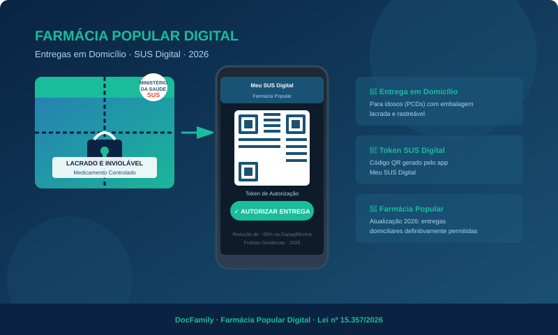
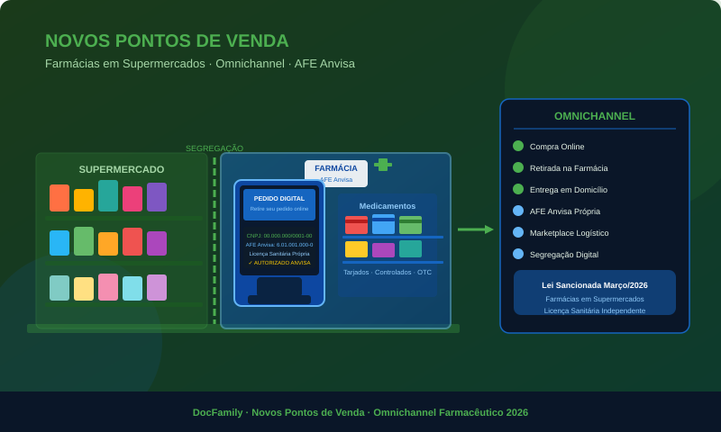
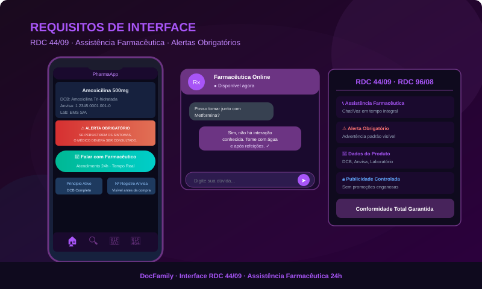

Privacidade e Termos de Uso
Cláusulas Específicas de Privacidade e Termos de Uso para Saúde & SNCR. Transparência e segurança para sua saúde digital.
-
1. Coleta de Dados de Saúde e Receituários
Ao utilizar as funcionalidades de compra de medicamentos controlados, coletamos dados cadastrais (Nome, CPF e Gov.br) e dados contidos na receita digital para validação obrigatória junto ao SNCR e cumprimento da RDC 44/09 da Anvisa.
-
2. Integração com o Governo (SNCR e Gov.br)
O Usuário autoriza o Aplicativo a realizar a consulta e a baixa da receita digital nos sistemas governamentais. A farmácia atua como Operadora de Dados, sendo o Ministério da Saúde o Controlador final dos registros nacionais.
-
3. Retenção de Dados e Prazos Legais
Exceção à LGPD: Dados de receitas de controle especial não podem ser excluídos antes de 5 anos, conforme exigência da Vigilância Sanitária. Dados de navegação comum seguem o fluxo normal de exclusão sob demanda.
-
4. Responsabilidade do Farmacêutico
Todo pedido de medicamentos tarjados passa por revisão humana obrigatória. O farmacêutico de plantão tem autoridade legal para cancelar vendas se identificar riscos ou inconsistências, com estorno automático.
-
5. Segurança da Informação
Utilizamos criptografia de ponta a ponta e autenticação multifator (MFA) via Gov.br para garantir que apenas o titular da receita ou seu representante legal possa realizar a compra com total segurança.
-
6. Integração com o SNCR (Receitas Digitais)
A partir de 1º de junho de 2026, o SNCR estará operacional. Validação nativa, assinatura digital (ICP-Brasil/Gov.br) e rastreabilidade total do paciente via CPF.
Leia mais -

7. Farmácia Popular Digital e Logística
Entregas em domicílio para idosos e PCDs, uso de tokens do aplicativo Meu SUS Digital e embalagens lacradas e invioláveis para medicamentos controlados.
Leia mais -

8. Novos Pontos de Venda (Supermercados)
Permissão para farmácias dentro de supermercados sob modelo Omnichannel. Segregação digital e Marketplace de Logística para facilitar a entrega ao consumidor.
Leia mais -

9. Requisitos de Interface e Conteúdo (RDC 44/09)
Assistência farmacêutica direta via chat/voz, alertas obrigatórios e exibição clara de dados do produto (DCB, Anvisa) antes da finalização da compra.
Leia mais